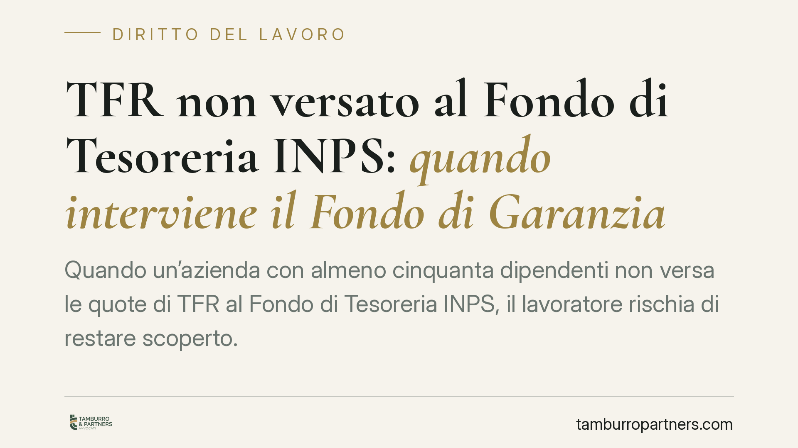

TFR non versato al Fondo di Tesoreria INPS: quando interviene il Fondo di Garanzia
Quando un'azienda con almeno cinquanta dipendenti non versa le quote di TFR al Fondo di Tesoreria INPS, il lavoratore rischia di restare scoperto. Il nodo è stabilire se quelle somme restino crediti retributivi del dipendente e se, in caso di insolvenza del datore, possa intervenire il Fondo di Garanzia. Il tema è rilevante per chiunque maturi TFR presso imprese sopra soglia.

Il contesto
Il trattamento di fine rapporto (TFR) è la somma che matura in favore del lavoratore durante tutto il rapporto e gli viene corrisposta alla cessazione. La sua disciplina base è l'art. 2120 cod. civ., che ne fissa criteri di accantonamento e rivalutazione.
Dal 2007, per le imprese di maggiori dimensioni, parte di queste quote non resta in azienda ma confluisce in un fondo gestito dall'INPS: il Fondo di Tesoreria, istituito dall'art. 1, commi 755 e seguenti, della legge 296/2006. L'obbligo riguarda i datori con almeno 50 dipendenti, salvo diversa destinazione del TFR scelta dal lavoratore (ad esempio la previdenza complementare).
Il Fondo di Tesoreria non è un soggetto che "anticipa somme all'erario": è una gestione INPS presso cui affluiscono le quote di TFR delle imprese sopra soglia, per finalità di finanza pubblica. In concreto, il datore trattiene dal proprio bilancio l'accantonamento e lo versa mensilmente all'INPS, che poi, alla cessazione del rapporto, eroga al lavoratore la parte corrispondente.
Il computo della soglia dei 50 dipendenti
La soglia non va letta in modo rigido. Il numero dei dipendenti si calcola sulla media occupazionale dell'anno solare precedente, considerando i lavoratori subordinati con le regole di computo proprie della materia (part-time proporzionato, esclusioni di determinate categorie). Un'azienda può quindi rientrare o uscire dall'obbligo in base all'andamento degli organici. Per il singolo lavoratore ciò incide sul canale attraverso cui il TFR verrà materialmente liquidato.
Il distinguo che conta: Fondo di Tesoreria e Fondo di Garanzia
Fondo di Tesoreria e Fondo di Garanzia sono due istituti diversi, entrambi gestiti dall'INPS ma con funzioni distinte.
Il Fondo di Tesoreria è il contenitore ordinario delle quote di TFR delle imprese sopra soglia. Il Fondo di Garanzia, previsto dall'art. 2 della legge 297/1982, è invece lo strumento di tutela che subentra quando il datore è insolvente e non paga il TFR dovuto.
Il punto critico è il mancato versamento. Se l'impresa omette di versare le quote al Fondo di Tesoreria e poi diventa insolvente, chi copre il lavoratore? La risposta ruota attorno alla natura del credito. Secondo l'orientamento che riconosce al TFR natura retributiva, le quote da versare al Fondo di Tesoreria restano crediti del lavoratore verso il datore: l'omissione contributiva non trasferisce il rischio sul dipendente. Ne consegue che, in caso di liquidazione giudiziale, può attivarsi il Fondo di Garanzia.
Si segnala che la questione è stata affrontata anche dalle Sezioni Unite della Cassazione; gli estremi esatti della pronuncia vanno verificati nella fonte ufficiale prima di farne un fondamento operativo. Il principio, in ogni caso, è coerente con il sistema: il lavoratore non deve subire le conseguenze di un inadempimento del datore nei confronti dell'INPS.
Limiti e massimali dell'intervento
L'intervento del Fondo di Garanzia non è illimitato e va distinto a seconda del credito.
Per il TFR, il Fondo paga l'intero importo dovuto e non versato, previa verifica dell'insolvenza e del titolo. Diverso è il meccanismo per le ultime retribuzioni: l'art. 2 del D.Lgs. 80/1992 prevede che il Fondo copra le ultime tre mensilità rientranti negli ultimi dodici mesi, entro un massimale pari a tre volte il trattamento massimo mensile di integrazione salariale. Sono due tutele separate, da far valere con distinte domande.
Implicazioni pratiche
Per il lavoratore di un'impresa sopra soglia, questo significa che l'omesso versamento del datore al Fondo di Tesoreria non azzera il diritto al TFR. In caso di crisi d'impresa esiste un canale di recupero, ma occorre muoversi nei tempi e con la documentazione corretta.
Cosa fare in concreto
- Richiedi l'estratto conto contributivo all'INPS per verificare se e quanto il datore abbia effettivamente versato al Fondo di Tesoreria.
- Conserva tutte le buste paga e la documentazione del rapporto: servono a quantificare il TFR maturato.
- In caso di insolvenza, insinua il credito al passivo della procedura di liquidazione giudiziale, qualificandolo correttamente come credito retributivo.
- Presenta la domanda al Fondo di Garanzia una volta accertato lo stato di insolvenza e ottenuto il titolo, distinguendo la richiesta per il TFR da quella per le ultime retribuzioni.
- Monitora i termini di prescrizione: il diritto va azionato per tempo. Consigliamo di verificare la decorrenza con un professionista prima che maturino decadenze.
Disclaimer
Contributo informativo a cura di Tamburro & Partners - Avv. Giuseppe Tamburro. Non costituisce parere legale.
Ogni storia di lavoro ha i suoi tempi.
Se gestisci HR e vuoi un confronto su contenzioso, ispezioni o licenziamenti, scrivi allo studio. Ti rispondiamo entro un giorno lavorativo.